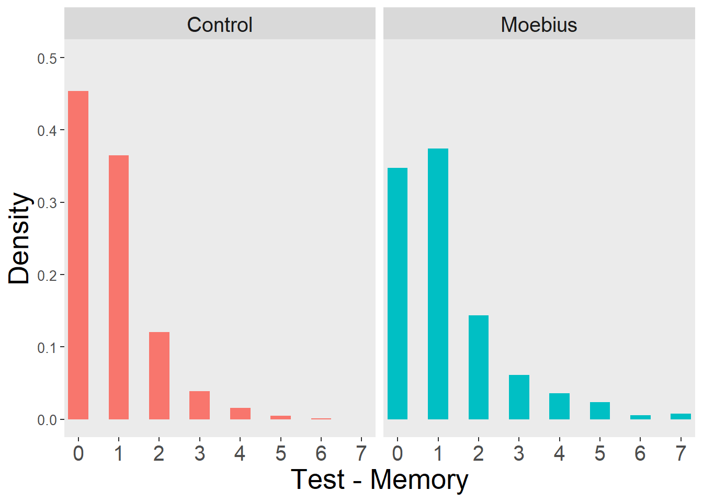
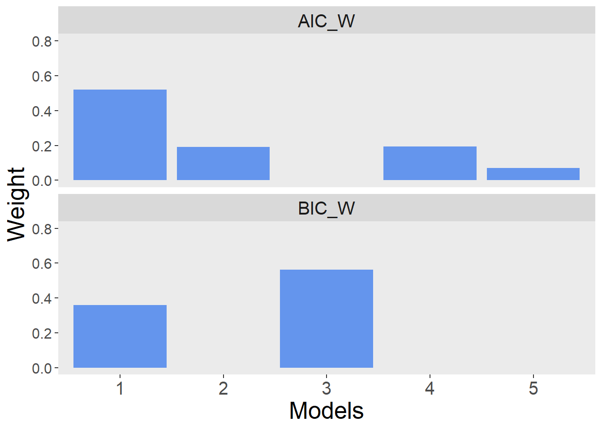
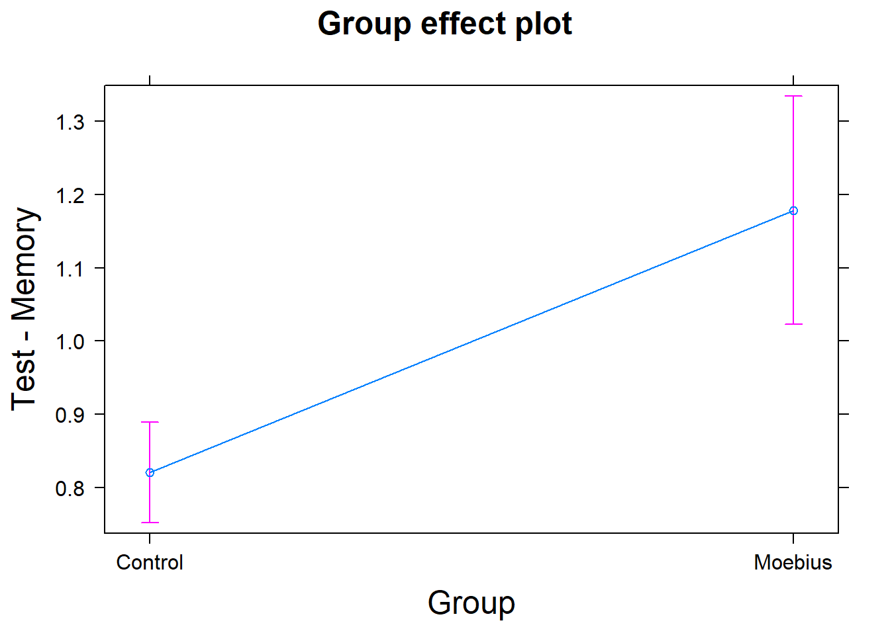
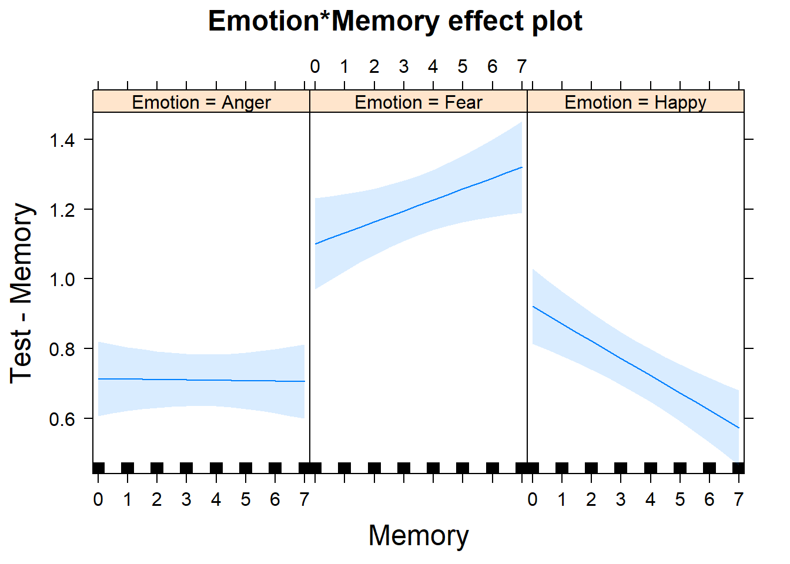

Facial mimicry impairment impacts the precision of visual working memory representations
Visual Working Memory Precision for Emotional Faces in Moebius Patients
Filippo Gambarota 1, 
@fgambarota
filippo.gambarota@phd.unipd.it
Massimiliano Pastore1 Roy Luria2,3 Pier Francesco Ferrari4 Paola Sessa1,5
1 Department of Developmental Psychology and Socialization, University of Padova, Italy
2 School of Psychological Sciences, Tel Aviv University, Israel
3 Sagol School of Neuroscience, Tel-Aviv University, Ramat Aviv, Tel Aviv, Israel
4 Institut des Sciences Cognitives Marc Jeannerod UMR 5229, CNRS, and Université Claude Bernarde Lyon, Bron Cedex, France
5 Padova Neuroscience Center, Padova, Italy
Introduction
Moebius syndrome is a rare neurological condition that primarily affects facial muscles control and eye movements (VII and VI cranial nerves). Models of Sensorimotor Simulation remark the importance of Facial Mimicry (i.e. the subtle movements of facial muscles in response to other people facial expressions) in facial expression processing and emotion recognition [1]–[3]. Facial mimicry compromission seems to have an impact on facial expression recognition [4]–[6].
Figure 1: People with Moebius Syndrome
Literature on emotion processing and social functioning in Moebius patients is very sparse and mainly related to the verbal component (i.e. facial expressions labelling and rating) [7], [8]. The model by Wood and colleagues [3] proposed an impact of sensorimotor simulation and facial mimicry at a low level of emotional processing such that the quality of visual representations can be modulated by the sensorimotor activity.
Visual representations have been widely studied in cognitive neuroscience literature especially related to visual working memory activity (VWM). VWM can be defined as a limited-space cognitive system where visual information is temporarily stored and manipulated for further processing [9], [10].
VWM seems to be important in social cognition [11] and facial mimicry manipulations can modulate the precision of emotional face representations [12]. In this study we investigate if a congenital impairment in facial mimicry can impact the precision of VWM representations.
Methods
We used a Delayed Estimation Task [13] (Figure 2). with emotional pictures (8 pictures) extracted from a facial expression video. Images ranged from neutral (0) to full facial expression (7) of Anger, Fear and Happiness. Subjects had to compare a briefly presented face (Memory Array) with a continous array presenting the entire pool of images of the same emotion (Test Display). Our dependant variable (Test-Memory):
\(abs(Pressed\;Level - Memory\;Level)\)
Where:
- 0 = Correct
- 1-7 = Increasing Error

Figure 2: Delayed Estimation Task with Faces
Hypothesis
The main hypothesis is that Moebius patients have lower visual working memory precision (in terms of higher mean error and higher variability) compared to the control group
Sample:
We collected 7 Moebius patients (3 females, mean age of 34 years, SD=10.5) and 30 healthy volunteers (15 females, mean age of 24.2, SD=4.6).
Analysis
We used a Linear Mixed-Effect Model to model the absolute error distribution (Figure 3) in the task as a function of Emotion (Fear, Happiness and Anger), Group (Moebius and Controls) and Memory Level (0-7) as a covariate.
We use a model selection approach to select the best predictors combination (according to Akaike Information Criterion and Bayesian Information Criterion) to explain our data. In order to deal with difference in variability between groups we include in the model the possibility to have heterogeneity of variances among Emotion and Group factors.

Figure 3: Test - Memory Distribution
Results

Figure 4: Model Weights according to AIC and BIC. Only models with weight > 0.01 are plotted
Where the best models are:
Model 1: AIC and BIC
Test-Memory = Emotion + Group + Memory + Emotion x Memory
Model 3: BIC
Test-Memory = Emotion + Group
Final Model
We selected the Model 1:

References
[1] A. I. Goldman and C. S. Sripada, “Simulationist models of face-based emotion recognition,” Cognition, vol. 94, no. 3, pp. 193–213, 2005, doi: 10.1016/j.cognition.2004.01.005.
[2] W. Sato, T. Fujimura, T. Kochiyama, and N. Suzuki, “Relationships among Facial Mimicry, Emotional Experience, and Emotion Recognition,” PLoS ONE, vol. 8, no. 3, p. e57889, Mar. 2013, doi: 10.1371/journal.pone.0057889.
[3] A. Wood, M. Rychlowska, S. Korb, and P. Niedenthal, “Fashioning the Face: Sensorimotor Simulation Contributes to Facial Expression Recognition,” Trends in Cognitive Sciences, vol. 20, no. 3, pp. 227–240, 2016, doi: 10.1016/j.tics.2015.12.010.
[4] S. Korb, A. Wood, C. A. Banks, D. Agoulnik, T. A. Hadlock, and P. M. Niedenthal, “Asymmetry of Facial Mimicry and Emotion Perception in Patients With Unilateral Facial Paralysis,” JAMA Facial Plastic Surgery, vol. 18, no. 3, p. 222, May 2016, doi: 10.1001/jamafacial.2015.2347.
[5] L. M. Oberman, P. Winkielman, and V. S. Ramachandran, “Face to face: Blocking facial mimicry can selectively impair recognition of emotional expressions,” Social Neuroscience, vol. 2, nos. 3-4, pp. 167–178, Sep. 2007, doi: 10.1080/17470910701391943.
[6] A. Wood, G. Lupyan, S. Sherrin, and P. Niedenthal, “Altering sensorimotor feedback disrupts visual discrimination of facial expressions,” Psychonomic Bulletin and Review, vol. 23, no. 4, pp. 1150–1156, Aug. 2016, doi: 10.3758/s13423-015-0974-5.
[7] K. R. Bogart and D. Matsumoto, “Facial mimicry is not necessary to recognize emotion: Facial expression recognition by people with Moebius syndrome,” Social Neuroscience, vol. 5, no. 2, pp. 241–251, 2010, doi: 10.1080/17470910903395692.
[8] A. J. Calder, J. Keane, J. Cole, R. Campbell, and A. W. Young, “Facial expression recognition by people with mobius syndrome,” Cognitive Neuropsychology, vol. 17, nos. 1-3, pp. 73–87, 2000, doi: 10.1080/026432900380490.
[9] H. R. Liesefeld and H. J. Müller, “Current directions in visual working memory research: An introduction and emerging insights,” British Journal of Psychology, vol. 110, no. 2, pp. 193–206, May 2019, doi: 10.1111/bjop.12377.
[10] S. J. Luck, “Visual short-term memory,” in Visual memory, S. J. Luck and A. Hollingworth, Eds. Oxford University Press, 2008, pp. 43–85.
[11] F. Gambarota and P. Sessa, “Visual Working Memory for Faces and Facial Expressions as a Useful ‘Tool’ for Understanding Social and Affective Cognition,” Frontiers in Psychology, vol. 10, no. OCT, pp. 1–7, Oct. 2019, doi: 10.3389/fpsyg.2019.02392.
[12] P. Sessa, A. S. Lomoriello, and R. Luria, “Neural measures of the causal role of observers’ facial mimicry on visual working memory for facial expressions,” Social Cognitive and Affective Neuroscience, vol. 13, no. 12, pp. 1281–1291, 2018, doi: 10.1093/scan/nsy095.
[13] W. Zhang and S. J. Luck, “Discrete fixed-resolution representations in visual working memory,” Nature, vol. 453, no. 7192, pp. 233–235, May 2008, doi: 10.1038/nature06860.